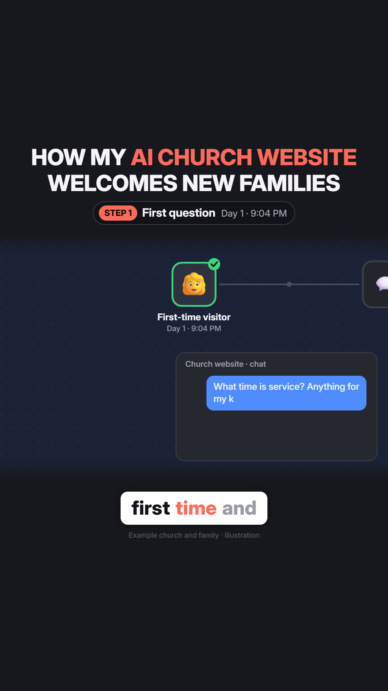
00:03.5At 9pm, a momSTEP 1 · First question · Day 1 · 9:04 PM. A phone node "Visitor" lights up, and a chat bubble types: "What time is service? Anything for my kids?"
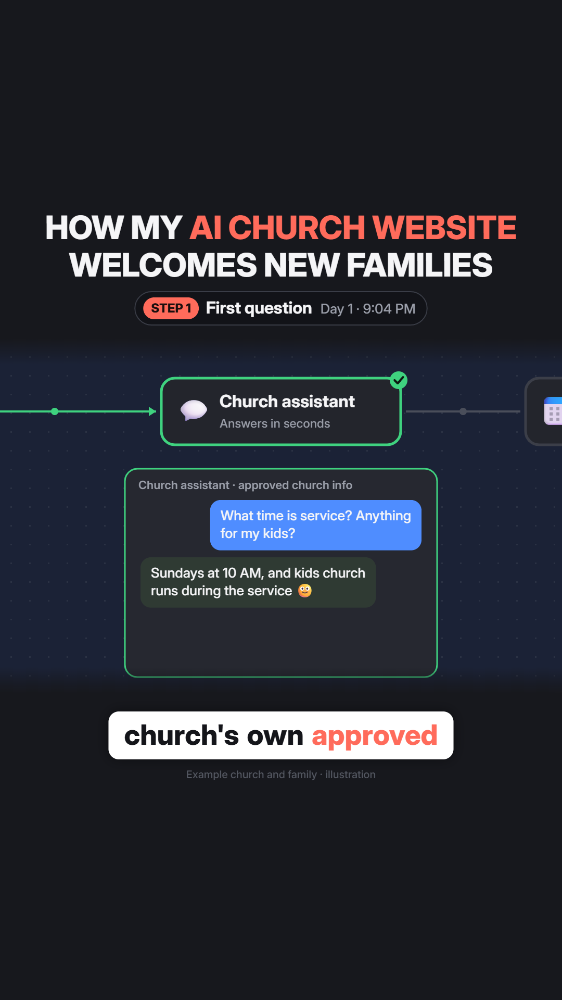
00:11.6In seconds, my churchThe "Church assistant" node (subtitle: approved church info) runs, then gets its check. Reply bubble: "Sundays at 10 AM. Kids church during the service." A button below it: "Plan a visit?"
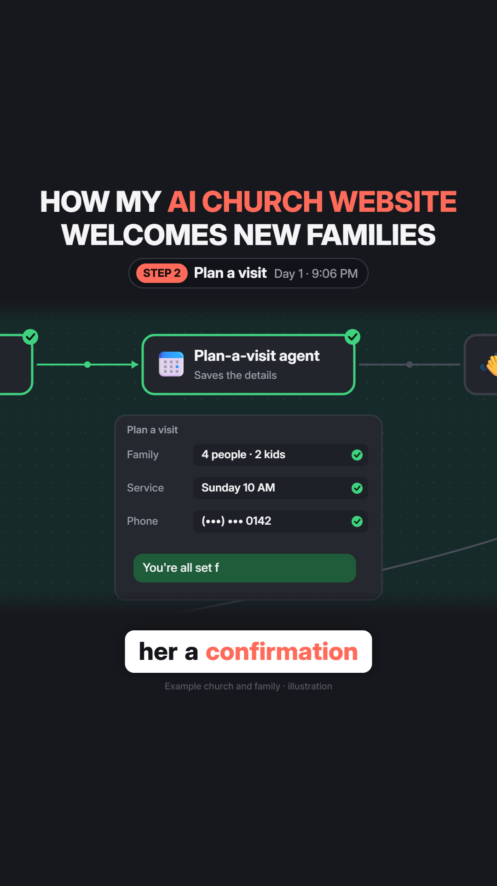
00:18.4My plan-a-visit agentSTEP 2 · Plan a visit · Day 1 · 9:06 PM. The camera pans to the "Plan-a-visit agent". Chips: "Family of 4", "2 kids", "10 AM". A text bubble: "You're all set for Sunday!"
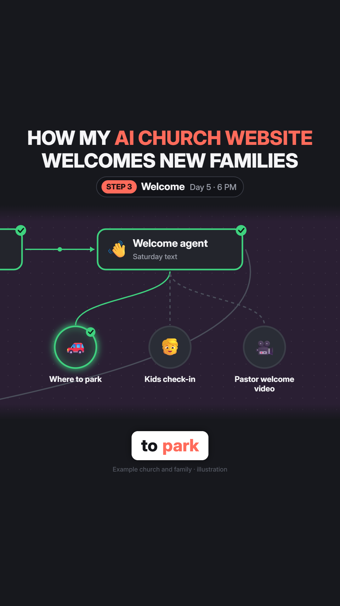
00:24.2Saturday evening, my welcomeSTEP 3 · Welcome · Day 5 · 6 PM. The "Welcome agent" sends three child nodes: Parking, Kids check-in, Pastor video (a thumbnail with a play icon).
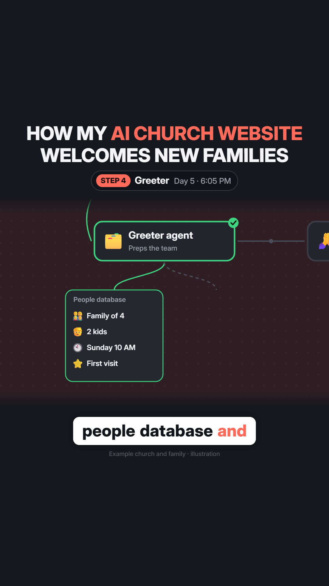
00:32.0greeter agent puts herSTEP 4 · Greeter · Day 5 · 6:05 PM. The "Greeter agent" leads to a "People database" card (Family file: 4 people, 10 AM) and a notification: "Welcome team: new family Sunday".
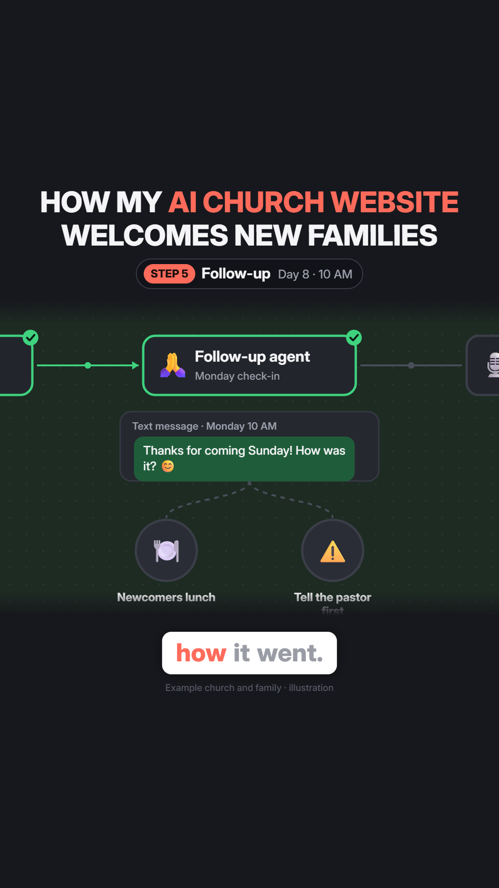
00:39.3On Monday, my follow-upSTEP 5 · Follow-up · Day 8 · 10 AM. The "Follow-up agent" sends a text bubble: "Thanks for coming! How was Sunday?"
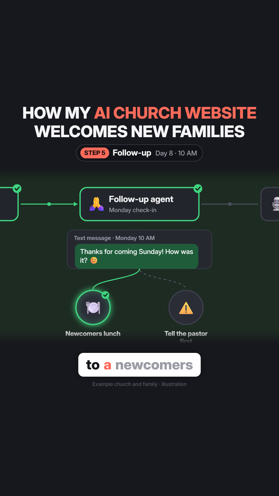
00:42.2If they loved it,The green branch leads to "Newcomers lunch" (an invite card).
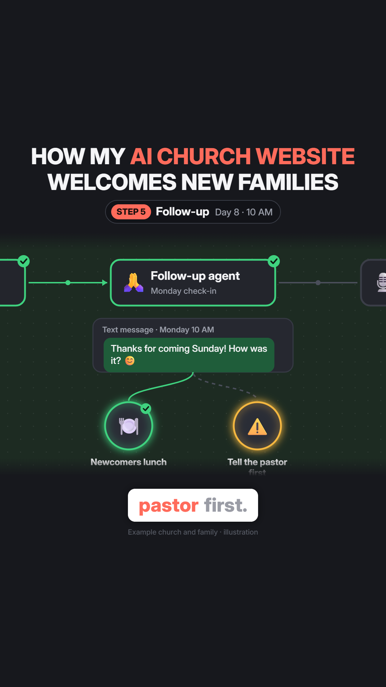
00:45.5If something went wrong,The amber branch, with a warning icon, leads to "Tell the pastor first".
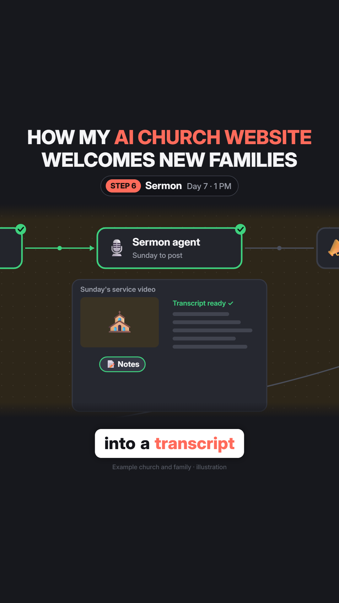
00:50.3Meanwhile, my sermon agentSTEP 6 · Sermon · Day 7 · 1 PM. The "Sermon agent" chain: Video → Transcript → Notes → Website post (DRAFT), then "Editor approves" gets a check.
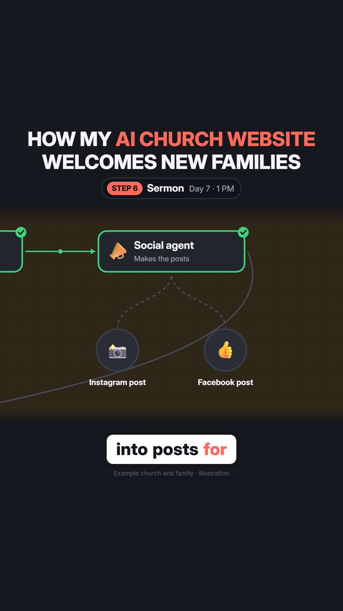
00:56.9My social agent turnsThe "Social agent" leads to Instagram and Facebook post cards.
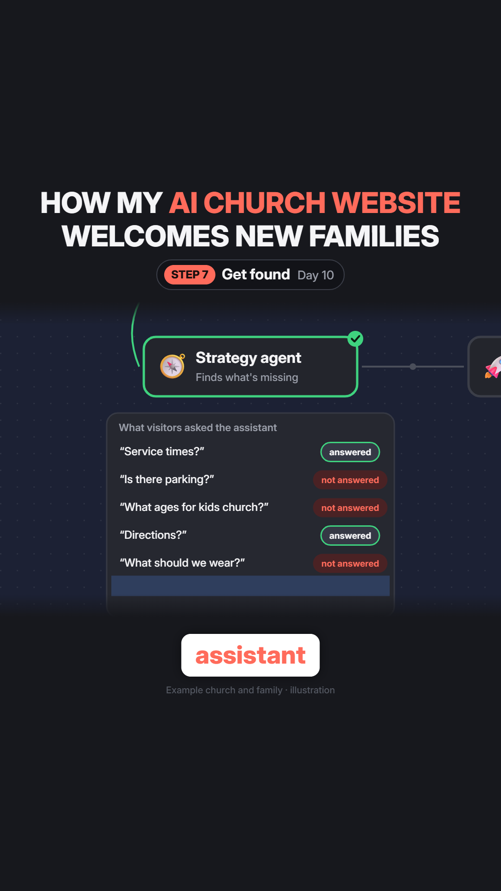
01:02.5Then my strategy agentSTEP 7 · Get found · Day 10. The "Strategy agent" reads the chat log, a red tag reads "3 questions not answered", and three FAQ draft cards appear.
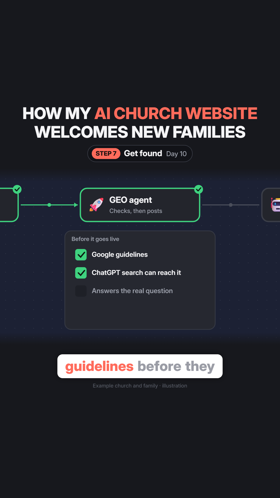
01:11.0My GEO agent checksThe "GEO agent" checks: Google ✓ ChatGPT ✓, then "LIVE on your website".
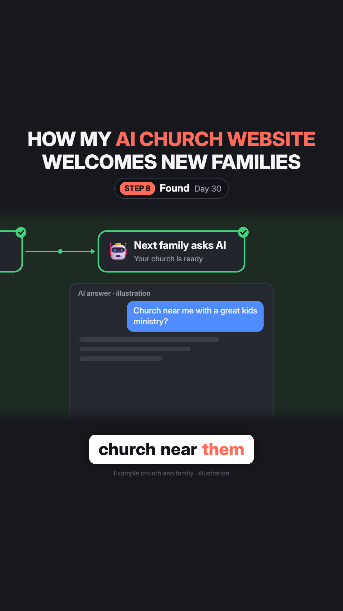
01:16.6So when the next familyAn AI chat card (labelled ILLUSTRATION): "Churches near you with a great kids ministry…" Your church's card slides into the answer: "ready to be the answer".
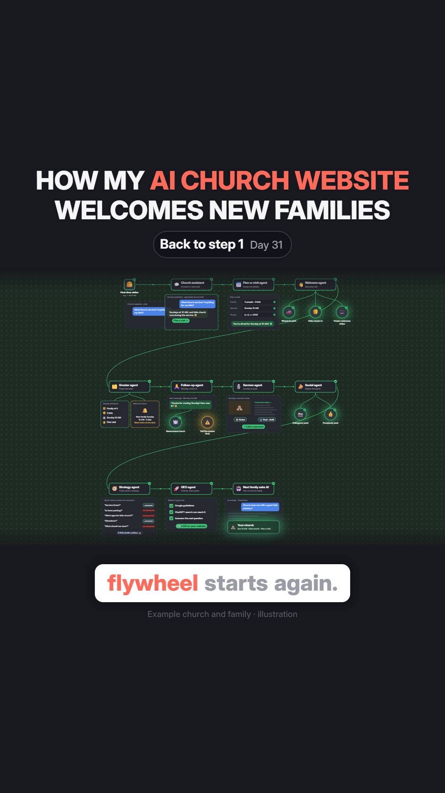
01:21.9and the whole flywheelThe camera pulls back to show the whole canvas glowing, then a quick return to Step 1.
01:26.1We built a systemA clean card: "Turn your church website into this digital front door". A comment box types "BUILD", then "Post". Small line: "(for church leaders)".